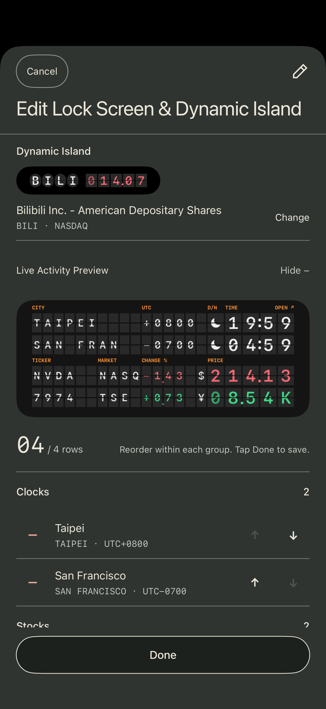

开始前
需要 iOS 18 及以上的 iPhone、机场牌的购买权益。锁屏实况与灵动岛共用该款买断权益；灵动岛需要支持该功能的机型。纯城市实况可在本机开启；晨昏刷新、最后10分钟提示与到期关闭由独立时钟服务辅助。购买、恢复购买、实况推送与股票更新需要可用网络。App 内的预览和内容编辑可以先免费使用。
设置锁屏与灵动岛的内容
- 在 App 中切到“实况”。打开“⋯”后进入“编辑表盘”。
- 分别选择内容。锁屏可组合城市与股票，灵动岛独立选择一项。调整顺序后点“完成”。
- 查看保存后的预览。这一步只保存配置，还没有开启系统实况。

主动开启实况
回到“实况”，打开“⋯”→“开启实况”，在“锁屏与灵动岛”状态页点底部的“开启实况”。未购买时，按提示购买或恢复机场牌。开启成功后锁定 iPhone 查看。
如果系统限制了咔哒的实时活动，请先在 iPhone 设置中检查该 App 的实时活动权限。支持灵动岛的机型会同时显示所选的灵动岛内容。
13秒操作演示
修改已运行的实况
保存后 App 预览立即更新，运行中的实况仍显示旧内容。在状态页看到“新配置待应用”时，点“应用新配置”；成功即替换，失败则保留原实况和原截止时间。
持续时间、重新开启与停止
实况计划每轮运行7小时59分钟，iOS 也可能提前结束。运行中点“重新开启”会重新计时；点“停止实况”并确认后，锁屏与灵动岛同时停止，配置和收藏保留。
受 iOS 实时活动机制限制，每次实况最多运行8小时，也可能提前结束。结束后灵动岛会移除，锁屏卡片可能额外保留最多4小时；仍显示不代表仍在更新，时间、日夜状态或行情可能已过期。请打开 App 重新开启，或移除旧卡片。
开启“全天候显示屏”的兼容机型可在锁屏明暗切换时自动翻牌；其他情况下可点牌面手动翻牌。开启系统“减少动态效果”后不播放翻牌动画。
需要调整股票的红绿含义？参阅涨跌配色设置。
开启失败，或股票没有更新？
先检查网络和系统实时活动权限，再根据状态页提示重试。股票可能因数据源或网络暂时不可用，没有有效报价时显示横线。详细说明见使用帮助。